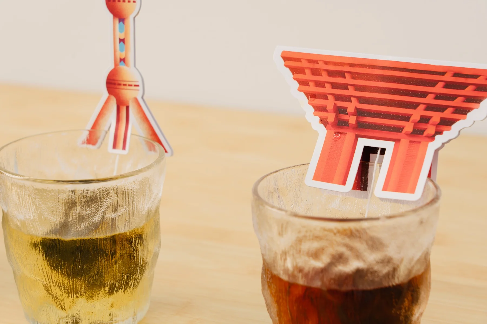
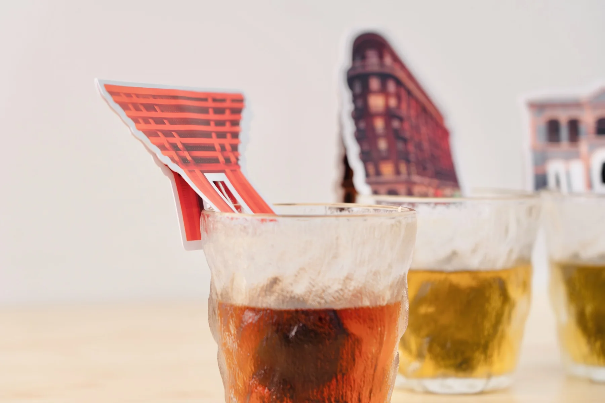
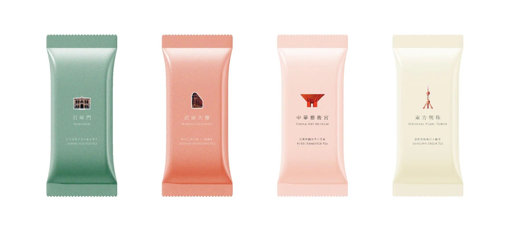
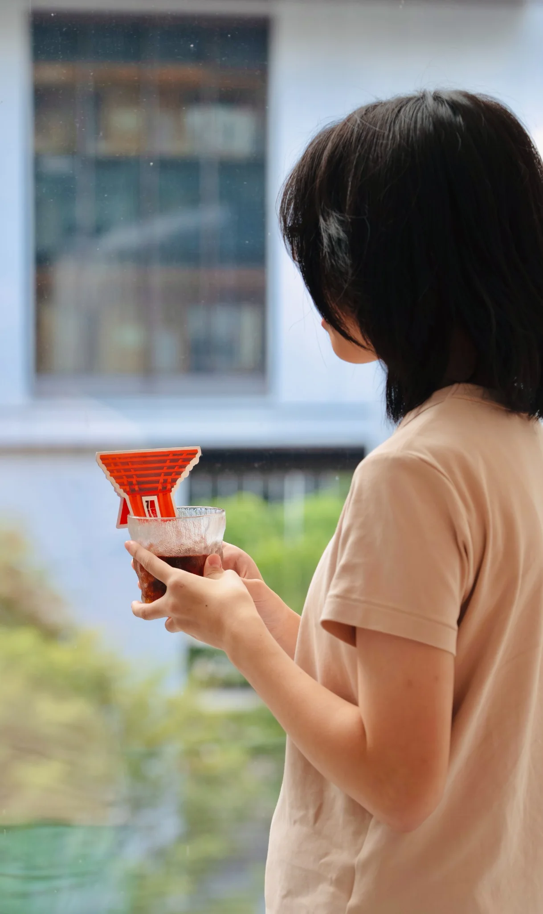
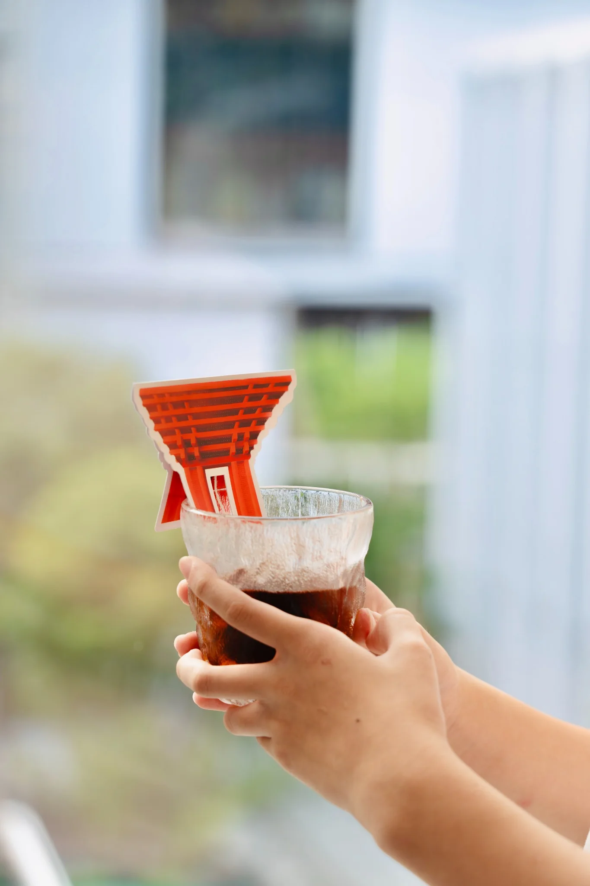
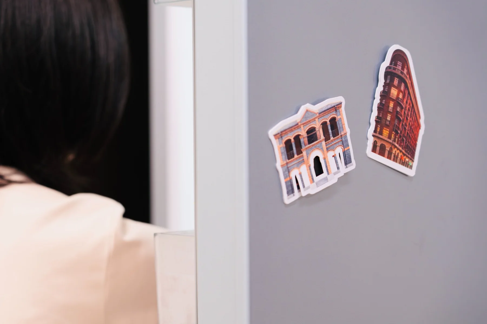
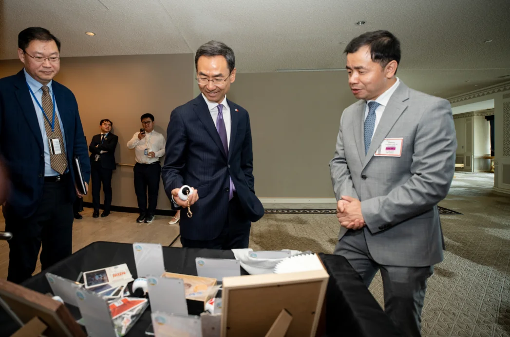
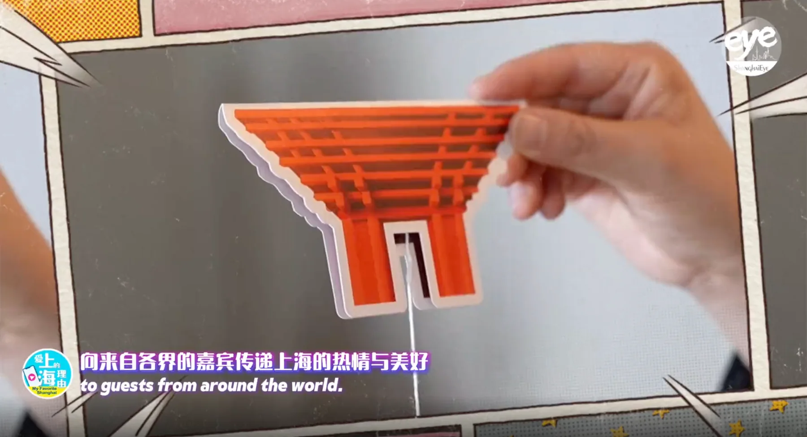
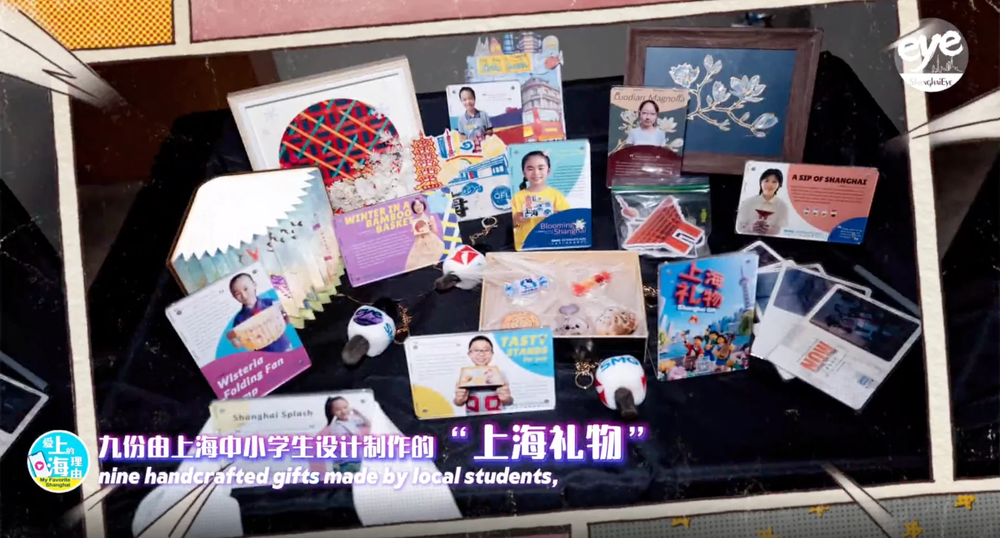
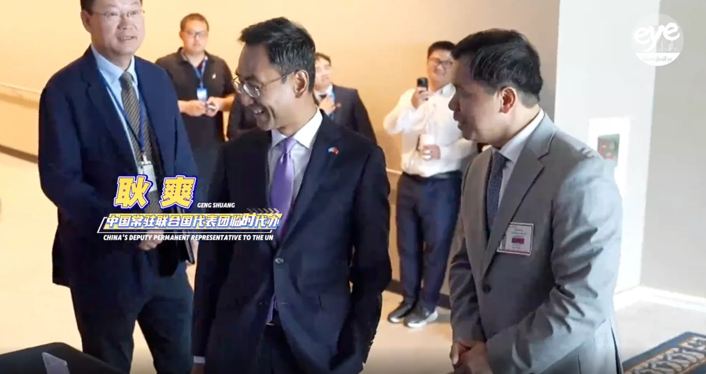

Brewing Shanghai
design
Not printed on the package.
Built into the ritual.
不是把上海印在包装上，而是把上海做进冲泡这件事里。
What if architecture could take part in an everyday ritual?
Four Shanghai landmarks were transformed into functional tea-bag structures that rest on the rim of a cup. As the tea steeps, the city appears to rise from the liquid.
As independent creative lead, I took the commission from concept through product and packaging design, prototyping, vendor coordination, production, photography and film.

From cultural symbol
to functional object.
Most city souvenirs place landmarks on the surface of a product. I reframed the brief: the architecture should not merely represent Shanghai — it should hold the tea bag in place.
Each silhouette was simplified into a die-cut form that balances architectural recognition, structural stability and manufacturability.


A familiar act of drinking becomes an intimate encounter with the city.
一次熟悉的饮茶行为，变成了人与城市之间短暂而亲密的相遇。


One concept,
a complete product language.
Shikumen, Wukang Building, China Art Museum and the Oriental Pearl Tower form one collection while keeping distinct identities — each paired with its own tea, colour and typography.
The system extends beyond the tea into packaging, bookmarks, magnets and further city-gift applications.

- Reframe
Turn a conventional themed package into an interactive cultural experience.
- System
Connect landmark, tea variety, colour, typography and product structure.
- Make
Coordinate prototyping, die-cutting, print production and final assembly.
- Direct
Photograph and film the object as a lived, intimate urban ritual.
From product to public reception.
The finished work was included in “Shanghai Gift”, presented at United Nations Headquarters in New York, and featured in ShanghaiEye’s coverage of the event.




Commissioned design and production led by Zhixing Zhang. The competition submission was made under the client’s registered entrant name.